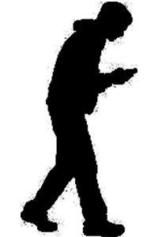
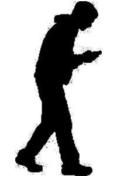

Gaze Tracker
Mapping and Shaping Attention during OBLIVIAN
Attentional Theory - Attentional Disconnection in the Modern Age
In the past, before screens dominated our lives, commutes encouraged observation and exploration. Gaze patterns were varied, directed outward toward the environment rather than downward. Over time, the rise of devices has reshaped muscle memory and attentional habits, resulting in a predominant downward gaze. This project seeks to undo these patterns, reteaching attention as a deliberate and interactive practice.
Evolution Over Time
 

Intervening with GazeTracker
Gaze Tracker is a device that tracks and maps gaze directions while commuting. By analyzing head position and mapping it to a 3x3 visual grid, it helps users identify gaze patterns. The device provides real-time feedback to encourage users to engage more attentively with their surroundings.
GazeTracker intervenes in this unconscious habit by creating a feedback loop that encourages intentional focus. By tracking gaze patterns on a 3x3 grid and logging time spent in different zones, it highlights habitual downward gazing and its impact. The device provides real-time feedback to redirect attention, prompting engagement with surroundings.


Attention as a Trainable and Moldable Process
Attention is imagined as both a muscle and clay—trainable through exercise and moldable through repeated awareness. Each notification serves as a reminder to look up, actively reshaping my relationship with the environment. Through this feedback system, GazeTracker fosters a playful yet disciplined approach to attention, blending technology and urban spaces into a partnership for cultivating spatial awareness and curiosity.
GAZE TRACKER - Mapping and Shaping Attention during OBLIVIAN